التفكيك الطيفي غير الخاضع للإشراف لثنائيات الأشعة السينية مع تطبيق على GX 339–4
الملخص
في هذا البحث نستكشف طرائق التفكيك الطيفي غير الخاضع للإشراف لتمييز أثر المكونات الطيفية المختلفة في مجموعة من الأطياف المتتابعة المأخوذة من ثنائي أشعة سينية. ونستخدم للتفكيك طرائق خطية راسخة، هي تحليل المكونات الرئيسية، وتحليل المكونات المستقلة، وتفكيك المصفوفات غير السالب (NMF). وعند تطبيق هذه الطرائق على مجموعة بيانات محاكاة تتألف من جسم أسود قرصي متعدد الألوان متغير وقانون قدرة ذي قطع، نجد أن NMF يتفوق على الطريقتين الأخريين في تمييز المكونات الطيفية. إضافة إلى ذلك، وبسبب الطبيعة غير السالبة لـ NMF، يمكن ملاءمة المكونات الناتجة كل على حدة، بما يكشف تطور المعلمات المنفردة. ولاختبار طريقة NMF على مصدر حقيقي، نحلل بيانات من ثنائي الأشعة السينية منخفض الكتلة GX 339–4، ونجد أن النتائج توافق نتائج الدراسات السابقة. كما وجدنا أن نصف القطر الداخلي لقرص التراكم يقع عند المدار الدائري المستقر الأعمق في الحالة المتوسطة مباشرة بعد ذروة الفوران. وتبين هذه الدراسة أن استخدام طرائق التفكيك الطيفي غير الخاضع للإشراف يؤدي إلى كشف تدفقات المكونات المنفصلة حتى عند مستويات تدفق منخفضة. وتوفر هذه الطرائق أيضًا سبيلًا بديلًا لكشف المكونات الطيفية من دون إجراء ملاءمة طيفية فعلية، وهو ما قد يثبت جدواه عند التعامل مع مجموعات بيانات كبيرة.
keywords:
التراكم، أقراص التراكم – الطرق: تحليل البيانات – النجوم: الثقوب السوداء – الأشعة السينية: الثنائيات – الأشعة السينية: مصدر منفرد: GX 339–4 – الأشعة السينية: النجوم.1 مقدمة
يقضي التوافق العلمي بأن أطياف الأشعة السينية لثنائيات الأشعة السينية ذات الثقوب السوداء (XRBs) وللنوى المجرية النشطة (AGNs) تمثل بثلاثة مكونات طيفية: مكون جسم أسود متعدد الألوان يمثل الانبعاث الصادر من قرص التراكم في الأشعة السينية اللينة، وقانون قدرة مع قطع أو من دونه يمثل كومتنة الفوتونات اللينة حراريًا أو لا حراريًا بفعل تجمع من الإلكترونات الساخنة في الأشعة السينية الصلبة، ومكون انعكاس يمثل الانبعاث المعاد تجهيزه للأشعة السينية الصلبة من قرص التراكم، أي الانبعاث الممتص كهروضوئيًا أو المشتت بتأثير كومبتون، في الطاقات المتوسطة، ويتجلى بأوضح صورة في هيئة خط حديد. غير أن مقدار هذه المكونات عند زمن معطى يظل مجهولًا. فعلى سبيل المثال، يكون مقدار المكون اللين في الحالة الصلبة صعب التحديد عادة. ومع ذلك، فإن معرفة هندسة قرص التراكم في الحالة الصلبة، ولا سيما موضع الحافة الداخلية لقرص التراكم، أمر حاسم لخصائص جميع نماذج أقراص التراكم أو لصحتها. وتكتسب هذه المعرفة أهمية خاصة في النماذج غير الكفؤة إشعاعيًا، مثل تدفق التراكم المسيطر عليه بالحمل (ADAF، Ichimaru, 1977; Narayan & Yi, 1994). وكثيرًا ما يستشهد بالخصائص الساكنة العابرة للثقوب السوداء بوصفها دليلًا على ADAFs وعلى آفاق أحداث الثقوب السوداء (Narayan et al., 1997; Garcia et al., 2001; McClintock et al., 2003). غير أنه لكي يكون نموذج ADAF ملائمًا، لا بد أن تزداد الحافة الداخلية لقرص التراكم برتب قدرية بين حالتي الفوران والسكون. ولذلك من المهم تحديد مقدار مكوني قرص التراكم والانعكاس في الحالة الصلبة، وهي مهمة صعبة بسبب انخفاض التدفق مقارنة بمكون الكومتنة. وفي الواقع، حتى الآلية الفيزيائية لانبعاث الأشعة السينية في الحالة الصلبة ما زالت موضع تساؤل، مع مساهمات محتملة من الانبعاث السنكروتروني المباشر من النفاثة (Falcke & Biermann, 1999; Markoff et al., 2001; Russell et al., 2010) أو من إشعاع السنكروترون الذاتي كومبتون من قاعدة النفاثة (Markoff et al., 2005). وينطبق هذا النوع من الانحلال الطيفي بوجه خاص على XRBs المجرية، ويمكن رؤية مثال لافت عليه مثلًا في Nowak et al. (2011)، حيث تلائم ثلاثة نماذج مختلفة جدًا مجموعة البيانات نفسها لـ Cyg X-1 بجودة متساوية، على الرغم من الجودة الممتازة للبيانات التي حصلت عليها جميع سواتل الأشعة السينية العاملة في المدار آنذاك. إضافة إلى ذلك، يصعب تحديد مقادير المكونات المختلفة في الحالات المتوسطة للأشعة السينية لأن جميع المكونات تكون مضيئة. وتنشأ تعقيدات إضافية في تفسير أطياف الأشعة السينية من توهين المادة بين النجمية في XRBs المجرية ومن الممتصات الدافئة المسماة كذلك، التي قد ترتبط برياح أقراص التراكم، في AGNs. ومن ثم فإن نمذجة أطياف الأشعة السينية للثقوب السوداء المتراكمة تؤدي غالبًا إلى مشكلة انحلال، أي إن عدة نماذج متمايزة تلائم البيانات المرصودة بالجودة نفسها. وحتى إذا حصلنا على ملاءمة تبدو جيدة بين البيانات والنموذج، فإن ذلك لا يعني بالضرورة تطابقًا بين النظرية والواقع الفيزيائي.
نبين في هذا البحث استخدام طرائق تفكيك خطية غير خاضعة للإشراف في فصل مجموعة من السلاسل الزمنية لأطياف الأشعة السينية إلى مكونات فرعية تقابل مكونات طيفية متميزة صادرة من القرص ومن تجمع الإلكترونات الساخنة. في القسم 2 سنقارن ثلاث طرائق تفكيك مختلفة، هي تحليل المكونات الرئيسية (PCA)، وتحليل المكونات المستقلة (ICA)، وتفكيك المصفوفات غير السالب (NMF)، باستخدام أطياف محاكاة تحاكي السلوك الطيفي لثنائي أشعة سينية نموذجي. ويوفر هذا التحليل تقديرًا أفضل لنماذج استمرارية الأشعة السينية اللازمة لملاءمة أطياف الأشعة السينية في XRBs، وذلك بأخذ التغير الطيفي في الحسبان إلى جانب ملاءمة الأطياف المتوسطة زمنيًا. في القسم 3 نطبق NMF على مجموعة أطياف من ثنائي الأشعة السينية ذي الثقب الأسود النجمي الكتلة GX 339–4. وبالاستناد إلى مجموعة رصد طويلة بما يكفي على امتداد مخطط الصلابة-الشدة (HID) للمصدر GX 3394، ندرس كيف يكشف التفكيك الطيفي تغير المكونات الطيفية في HID. وفي القسم 4 نقدم استنتاجات هذا البحث ونقترح استخدامات مستقبلية لطرائق التفكيك الطيفي في سياق XRBs.
2 التفكيك الطيفي غير الخاضع للإشراف
يمكن تفكيك أطياف الأشعة السينية بطرائق تفكيك المصفوفات. وبوجه عام، تندرج هذه المسألة ضمن فئة فصل المصادر الأعمى (BSS)، حيث تقدر مجموعة من إشارات المصدر من مجموعة من الإشارات المختلطة من دون معلومات عن إشارات المصدر أو عن عملية المزج. في هذه الحالة تكون مصفوفة البيانات مجموعة من أطياف الأشعة السينية المتقطعة، ، وتتألف من قيم تدفق ذات طاقة مقيسة عند الزمن . وتؤخذ هذه المصفوفة على أنها تتألف من مزيج من بضع إشارات مصدرية منفصلة ، حتى العدد ، موزونة عبر نطاقات الطاقة بمصفوفة أوزان . ويمكن في الجوهر النظر إلى أعمدة مصفوفة الأوزان على أنها تمثل مكونًا طيفيًا ثابتًا ذا مطال متغير تحدده صفوف مصفوفة إشارة المصدر لكل . عمليًا، يكون أصغر بكثير من أو ، لأن المقصود هو وصف المعلومات في بإيجاز. وبعد ذلك يقدر و بطريقة تجعل ، أي
| (1) |
مسألة BSS ناقصة التحديد إلى حد كبير، إذ توجد حلول متعددة صحيحة بالقدر نفسه. غير أن فرض شروط ذكية على التفكيك يمكن أن يخفض عدد الحلول الممكنة ويعطي نتائج ذات معنى. فـ PCA، مثلًا، يفترض أن إشارات المصدر ذات ارتباط أدنى بعضها ببعض، في حين يفترض ICA أن إشارات المصدر مستقلة بعضها عن بعض إلى أقصى حد. ويقدم NMF نهجًا مختلفًا قليلًا إذ يفرض قيودًا بنيوية، أي لا سلبية المصفوفتين المكونتين و. وفيما يلي ننشئ مجموعة بيانات محاكاة تحاكي الآثار الطيفية الموجودة في بيانات الأشعة السينية المعتادة لـ XRBs، ونعالجها بالطرائق المبينة أعلاه.
2.1 المحاكاة
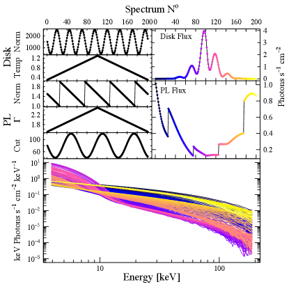
لتقدير مدى ملاءمة طريقة تفكيك ما (PCA/ICA/NMF)، أنشأنا مجموعة بيانات محاكاة تحاكي الآثار الطيفية الموجودة في بيانات الأشعة السينية المعتادة لـ XRBs: أطياف جسم أسود قرصي (diskbb) ممتصة (phabs) بقيم معايرة ودرجة حرارة متغيرة، وأطياف قانون قدرة ذي قطع (cutoffpl) بقيم معايرة ومعامل طيفي وقطع متغيرة. وبالنسبة إلى “المسارات الطيفية” نستخدم دوالًا قابلة للتمييز مثل الموجات الجيبية والمنشارية. إضافة إلى ذلك، نغير درجة حرارة القرص ومعامل قانون القدرة بحيث ننتج حالات أشعة سينية لينة وصلبة. ونستخدم isis (Houck & Denicola, 2000) لتصنيع 200 طيفًا بزمن تعريض قدره 5 ks، مع تغيير معايرة الجسم الأسود جيبيًا من 500 إلى 2500، ودرجة حرارة الجسم الأسود خطيًا من 0.3 keV إلى 1.3 keV ثم عودة، ومعايرة قانون القدرة في صورة موجة منشارية من 1.0 إلى 2.0، ومعامل قانون القدرة خطيًا من 1.5 إلى 2.5 ثم عودة، وقطع قانون القدرة جيبيًا من 40 keV إلى 120 keV (الشكل 1). استخدمنا دالة استجابة RXTE من الرصد الموجه إلى GX 339–4، 70110–01–04–00، ثم بسطنا الأطياف باستخدام isis إلى وحدات التدفق (keV photons s-1 cm-2 keV-1). ونود أن نشير إلى أن استخدام أطياف “مصححة للتدفق” يدخل سمات مصفوفة الاستجابة إضافة إلى العمليات الفيزيائية، وهو ما قد يكون له أثر في أنظمة التدفق المنخفض.
بما أن PCA وICA وNMF كلها طرائق تعتمد على التفكيك الخطي، فإنها أنسب ما تكون لإيجاد تغير معايرات المكونات الطيفية، وقد تسلك سلوكًا مضطربًا عند التعامل مع آثار أعقد مثل تغير العمق البصري ودرجة حرارة الإلكترونات، اللذين يغيران القطع والميل الطيفي لأطياف الأشعة السينية. ومع ذلك، عندما تقدم إليها بيانات تتغير على نحو غير خطي، يمكن استخدام الطرائق الخطية لأن اللاخطية يمكن تقريبها بوصفها مجموعة من عدة مكونات خطية. لذلك لا نتوقع أن يعيد التفكيك تغير المعلمات نفسها، بل تدفقات المكونات الطيفية التي تنتجها المعلمات المتغيرة مجتمعة. ومن ثم تقاس جودة التفكيك بمدى قدرته على إعادة إنتاج تدفقات القرص وقانون القدرة. وفيما يلي نستعرض طرائق التفكيك الطيفي المختلفة وكيف تستطيع إعادة إنتاج التدفقات الأصلية للمكونات الطيفية في المحاكاة.
2.2 تحليل المكونات الرئيسية
يعد PCA (للمراجعة مثلًا Jolliffe, 2002) أحد الأدوات المعيارية في تحليل السلاسل الزمنية، وقد استعمل في علم الفلك أساسًا في التصنيف الطيفي النجمي (مثلًا Whitney, 1983)، والتصنيف الطيفي للمجرات (مثلًا Connolly et al., 1995)، والتصنيف الطيفي للكوازارات (مثلًا Francis et al., 1992). ولدراسة أطياف الأشعة السينية المتغيرة، استعمل PCA في AGNs مثلًا بواسطة Vaughan & Fabian (2004) وParker et al. (2014)، وفي XRBs بواسطة Malzac et al. (2006) وKoljonen et al. (2013). غير أن أحد عيوب استخدام PCA في تفكيك الأطياف هو ميله إلى إلغاء المكونات لأنه يعمل على أطياف مطروح منها المتوسط. وينتج عن ذلك مكونات يكون أثرها في أطياف الأشعة السينية إما مبالغًا فيه أو مخفضًا تبعًا لقيم معايرتها. كذلك، إذا كانت للمتجهات الذاتية للمكونات الرئيسية قيم موجبة وسالبة معًا، فإن ذلك يؤدي إلى سلوك دوران محوري في الأطياف؛ أي عندما تزداد معايرة ذلك المكون يزداد أثر المكون في الجزء الموجب وينخفض في الجزء السالب من المتجه الذاتي. ومع ذلك، يتبين أن هذا وكيل جيد لمعامل قانون القدرة (Parker et al., 2014).
استخدمنا تفكيك القيم المفردة (SVD) في حساب مكونات الأطياف المنفردة المطروح منها المتوسط التي تؤلف في الطرف الأيسر من المعادلة 1. ويمكن العثور على وصف أكثر تفصيلًا للطريقة مثلًا في Malzac et al. (2006) وKoljonen et al. (2013) وParker et al. (2014).
2.2.1 اختيار درجة التفكيك
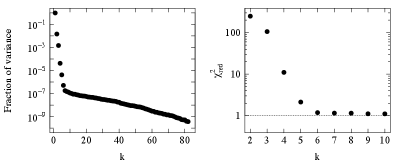
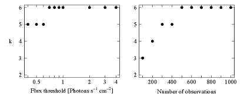
بوجه عام، نتوقع أن تكون جودة التفكيك، أي مدى مشابهته للبيانات الأصلية، دالة متزايدة في درجة التفكيك . ولن تكون القيمة “الجيدة” لـ عظمى محلية للجودة، بل نقطة تتغير عندها استجابة الجودة لـ من شديدة الانحدار إلى ضحلة (أي إن قيمة “جيدة” لـ توفر تقريبًا أفضل بكثير من القيم الأصغر القريبة، لكنها أسوأ قليلًا فقط من القيم الأكبر القريبة). إحدى طرائق اختيار درجة التفكيك في PCA هي مخطط القيمة الذاتية اللوغاريتمية (LEV) (مثلًا Jolliffe, 2002; Koljonen et al., 2013). وفي مخطط LEV يمكن تمييز المكونات المهمة عن الضجيج بانحرافها عن المتوالية الهندسية، أي عن الخط المستقيم في المخطط. إضافة إلى ذلك، نبتكر طريقة مشابهة لمخطط LEV لقياس جودة الأطياف المفككة باستخدام وسيط قيم المختزلة للتفكيك الناتج عند مقارنته بمجموعة بيانات المحاكاة. وتحسب هذه الطريقة قيم المختزلة بين كل طيف منفرد من التفكيك ، في الطرف الأيمن من المعادلة 1، بدرجات تفكيك مختلفة، وبين الأطياف من مجموعة بيانات المحاكاة مع أخطائها المصاحبة، ثم تأخذ وسيط هذه القيم، منتجة بذلك مقياس جودة يبين مدى جودة ملاءمة التفكيك ذي الدرجة للبيانات، ومخفضة عدد المكونات إلى تلك التي تتغير فوق مستوى الضجيج. وكما ذكر أعلاه، ينبغي أن تكون درجة التفكيك المختارة نقطة ينتقل عندها وسيط قيمة المختزلة من شديد الانحدار إلى ضحل. إضافة إلى ذلك، ينبغي أن تكون القيمة قريبة من 1 كي تمثل الأطياف الأصلية بأمانة. ولنسم هذه الطريقة مخطط ، ويمكن صياغتها كما يلي:
| (2) |
سيستخدم مخطط أيضًا لنتائج ICA وNMF لتسهيل المقارنة بين الطرائق المختلفة. ويرجع ذلك إلى أن مخطط LEV لا يمكن استخدامه مع ICA وNMF، إذ يجب في هاتين الطريقتين تحديد عدد مكونات التفكيك قبل بدء التحليل نفسه.
يبين الشكل 2 مخطط LEV ومخطط لمجموعة بيانات المحاكاة بدرجات تفكيك مختلفة. ويشير مخطط LEV في الشكل 2 إلى بداية الضجيج بعد ، مما يدل على أن ستة مكونات كافية لتفسير أطياف الأشعة السينية في المحاكاة. وبالمثل، لا يبدو في مخطط بعد أي تحسن في قيمة عند إضافة مكونات أخرى، ولذلك يكفي أخذ ستة مكونات في الحسبان. وهذا يبين أيضًا أن مخطط يقود إلى الاستنتاج نفسه الذي يقود إليه مخطط LEV. واستنادًا إلى هاتين الطريقتين يكفي أخذ ستة مكونات رئيسية في الحسبان لتفسير أطياف الأشعة السينية في المحاكاة.
ودرسنا أيضًا كيف يتغير عدد فوق مستوى الضجيج في مخطط في عينة محدودة بالتدفق أو محدودة زمنيًا. وفي هذه الحالة نستخدم إعداد المحاكاة والنماذج ومجالات المعلمات نفسها، لكننا نزيد عدد الأطياف خمسة أضعاف لزيادة الدقة. يبين الشكل 3 كيف يتغير إذا قيدت العينة بما دون عتبة تدفق ما (اللوحة اليسرى)، أو إذا قيدت العينة بحيث تمتد على عدد من الرصود من بداية المحاكاة (اللوحة اليمنى). وللحصول على ، نرى أن استخدام مجموعة البيانات كاملة ليس ضروريًا، وإن كان لا يزال يمثل مقدارًا كبيرًا (فمستوى التدفق 0.7 photons s-1 cm-2 يقسم البيانات تقريبًا إلى مجموعتين متساويتين). ومع ذلك، حتى في العينات الأصغر يكون عدد المكونات المهمة أصغر قليلًا فقط.
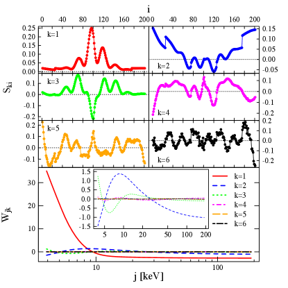
2.2.2 بيانات المحاكاة
يعرض الشكل 4 المكونات الرئيسية الستة؛ إشارات المصدر والأوزان عبر الطاقات، المشتقة من مجموعة بيانات المحاكاة. ومن الواضح أن المكون الأول () يقابل التغيرات في مكون القرص، وأن المكون الثاني () يقابل التغيرات في مكون قانون القدرة. غير أنه ليس واضحًا كيف تساهم المكونات المتبقية في مكوني القرص وقانون القدرة؛ ويرجح أنها تنتج تصحيحات سالبة وموجبة عشوائية لمكون القرص أو مكون قانون القدرة أو كليهما. وتعرض مقارنة أول مكونين مع تدفقي القرص وقانون القدرة من المحاكاة في القسم 9.
2.3 تحليل المكونات المستقلة
يمثل ICA (للمراجعة، انظر مثلًا Hyvärinen et al., 2001) حلًا خطيًا لـ BSS شبيهًا بـ PCA، لكنه يعتمد على الاستقلال الإحصائي للمكونات المكونة بدلًا من انعدام الارتباط والتعامد. وعلى غرار PCA، استعمل ICA في علم الفلك أساسًا للتصنيف الطيفي للمجرات (مثلًا Lu et al., 2006; Allen et al., 2013). والاستقلال الإحصائي شرط أشد صرامة من انعدام الارتباط، إذ إن انعدام الارتباط يترتب على الاستقلال لكن العكس غير صحيح. ويعتمد ICA على مبرهنة النهاية المركزية التي تنص على أن متوسط العمليات العشوائية يقترب دائمًا من توزيع غاوسي. لذلك يبحث ICA عن مكونات غير غاوسية. ويعاني ICA من المشكلات نفسها التي يعانيها PCA في التفكيك الطيفي، لأنه يعمل أيضًا على الأطياف المطروح منها المتوسط، مما ينتج أوزانًا موجبة وسالبة وأطياف مصدرية ذات سلوك دوران محوري.
استخدمنا خوارزمية fastica (Hyvärinen, 1999) في حساب مكونات الأطياف المنفردة المبيضة مسبقًا التي تؤلف ، في الطرف الأيسر من المعادلة 1، وذلك باستخدام الإنتروبيا السالبة للبحث عن المكونات غير الغاوسية.
2.3.1 اختيار درجة التفكيك
لـ ICA عيب مقارنة بـ PCA، وهو أنه لا يرتب المكونات وفق حصتها من التباين. كذلك، ينبغي تحديد درجة التفكيك قبل تشغيل الخوارزمية. وكما في PCA، نستخدم الطريقة نفسها لتحديد جودة التفكيك باستعمال مخطط كما شرح في القسم 2.2.1. يبين الشكل 5 مخطط لدرجات مختلفة من التفكيك. وعلى غرار نتائج PCA، لا يبدو بعد أي تحسن في قيمة بإضافة مزيد من المكونات، ولذلك يكفي أخذ ستة مكونات في الحسبان لتحليل ICA.
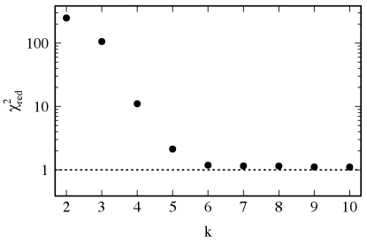
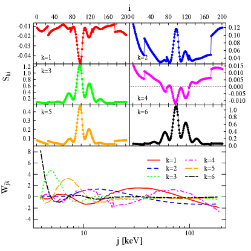
2.3.2 بيانات المحاكاة
يعرض الشكل 6 المكونات المستقلة الستة، مقسمة كما سبق إلى إشارات المصدر والأوزان، والمشتقة من مجموعة بيانات المحاكاة. وعلى خلاف PCA، تبدو جميع المكونات ذات صلة بمكون القرص أو مكون قانون القدرة أو كليهما. واستنادًا إلى مجال طاقة الأوزان والتدفقات المحاكاة في الشكل 1، يبدو أن مكونات ICA المستقلة تمثل القرص وأن المكونات المستقلة تمثل المكونات الطيفية لقانون القدرة. غير أنه يمكن أن نرى أنه عندما يكون تدفق قانون القدرة منخفضًا، يتسرب تدفق القرص إلى جميع المكونات المستقلة. وتعرض مقارنة مكوني القرص وقانون القدرة كما تمثلهما المكونات المستقلة المقابلة مع تدفقي القرص وقانون القدرة من المحاكاة في القسم 9.
2.4 تفكيك المصفوفات غير السالب
يوفر NMF (Paatero & Tapper, 1994; Lee & Seung, 1999) بديلًا مثيرًا لطرائق اختزال الأبعاد التقليدية. ففي NMF، تمثل العينات بتركيبات غير سالبة من مكونات معيارية. ومن ثم فإن البنية التي تجدها طرائق NMF غالبًا ما تكون مختلفة جدًا عن بنية الطرائق التقليدية المعتمدة على المتجهات الذاتية، مثل PCA، وأسهل منها تفسيرًا بالحدس. ومن خلال بناء العينات بوصفها تركيبات موجبة، يمتلك NMF أيضًا قدرة على فك تشابك المكونات المعيارية التي كثيرًا ما تتراكب لتكوين عينات مجتمعية بعينها. وثمن هذا التفكيك الأيسر تفسيرًا هو أن التفكيك تقريبي، أي ليس وحيدًا كما في PCA، وأن المكونات تعتمد على بعد التفكيك، مما يتطلب مزيدًا من العناية في التفسير.
في NMF توجد المصفوفتان و بتصغير دالة كلفة تحت قيد أن تكونا غير سالبتين. ويمكن بناء دالة الكلفة هذه باستخدام مقياس مسافة ما بين و. في هذا البحث نستخدم تباعد Kullback-Leibler (KL) المعمم،
| (3) |
حيث . يقيس تباعد KL المعلومات المفقودة عندما تستخدم لتقريب ، ومن ثم فإن تصغيره يؤدي إلى تعظيم معلومات في . إضافة إلى ذلك، بينت Sajda et al. (2003) أن تصغير دالة الكلفة أعلاه يكافئ تعظيم احتمال توليد من عندما يفترض أن موزع وفق بواسون بمتوسط . ولذلك فإن تباعد KL دالة كلفة ملائمة للاستخدام مع بيانات عد الأشعة السينية.
في هذا البحث نستخدم حزمة nmf (Gaujoux & Seoighe, 2010) التي تحسب NMF القياسي (Brunet et al., 2004) باختيار قيم ابتدائية عشوائية لـ و من توزيع منتظم ، ثم تحدثها تكراريًا 10000 مرة لإيجاد حد أدنى محلي لدالة الكلفة بقاعدة ضرب من Lee & Seung (2001):
| (4) |
| (5) |
ولضمان عدم توقف الخوارزمية عند حد أدنى محلي، كررنا عملية التصغير من 50 نقاط ابتدائية مختلفة (تعد 30–50 نقطة ابتدائية كافية في Hutchins et al. 2008 وBrunet et al. 2004 للحصول على تقدير متين لدرجة التفكيك ) لكل قيمة من ، ومن 300 نقطة ابتدائية مختلفة لدرجة التفكيك المختارة، واستخدمنا التفكيك الذي صغر دالة الكلفة في المعادلة 3.
2.4.1 اختيار درجة التفكيك
NMF ليس طريقة هرمية؛ فكل مكون يعتمد على اختيار الدرجة ، ولذلك ينبغي اتخاذ هذا الاختيار بعناية. وعلى غرار PCA وICA أعلاه، نستخدم مخطط كما شرح في القسم 2.2.1. يبين الشكل 7 مخطط لدرجات مختلفة من التفكيك. بعد لا يبدو أن هناك أي تحسن في قيمة عند إضافة مكونات أخرى، ولذلك يكفي أخذ ستة مكونات في الحسبان لتحليل NMF.
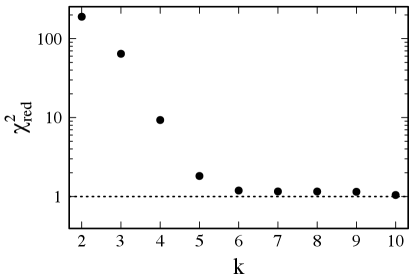
2.4.2 بيانات المحاكاة
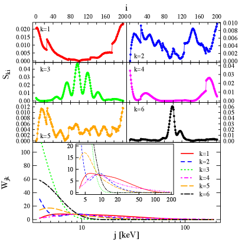
يعرض الشكل 8 المكونات المشتقة بواسطة NMF من مجموعة بيانات المحاكاة. وتنقسم المكونات بوضوح إلى ما يمثل مكون القرص () وما يمثل مكون قانون القدرة (). والمكونان الممثلان للقرص يحتفظان حتى ببعض معلومات المعلمات الأصلية؛ إذ يظهر ازدياد درجة حرارة القرص وانخفاضها، ويظهر المعايرة المتغيرة جيبيًا، وإن كان يظهر بوضوح قدر من المزج بين كلا المكونين. أما المكونات التي تمثل قانون القدرة فهي أكثر امتزاجًا بعضها ببعض، لكن يمكن تمييز بعض التشابه بين معايرة قانون القدرة والمكونين و، وبين معامل قانون القدرة والمكون ، وبين القطع والمكون . وينبغي أن يؤخذ في الاعتبار أن المطابقة واحدًا لواحد مع معلمات النموذج غير متوقعة لأن آثارها في الأطياف لاخطية، إلا أن NMF يؤدي أداءً جيدًا جدًا في تمييز مكوني القرص وقانون القدرة أحدهما عن الآخر وفي التعامل مع الآثار اللاخطية. وفيما يلي سنقارن جميع التفكيكات من PCA وICA وNMF بالتدفقات المشتقة من مكوني القرص وقانون القدرة في مجموعة بيانات المحاكاة.
2.5 مقارنة التفكيكات
من اللافت أن جميع الطرائق تتقارب إلى درجة التفكيك نفسها، وإن كان ذلك بمكونات تبدو مختلفة. ويبين هذا أن المكونات المنفردة في التفكيكات لا تمثل على الأرجح أي معلمات ذات معنى في النموذج الطيفي، وهذا متوقع لأن المعلمات تتغير على نحو لاخطي. غير أنه يمكن تجميع مكون القرص ومكون قانون القدرة من مجموعة من مكونات التفكيك. ويعرض الشكل 9 الارتباط بين قيم تدفق النموذج (انظر الشكل 1) وبين مكونات منفردة أو تراكيب مختلفة منها تمثل مكون القرص أو قانون القدرة في طرائق التفكيك المختلفة الموصوفة أعلاه. يستطيع PCA تمييز تدفق القرص تمييزًا جيدًا إلى حد معقول. أما إنتاج تدفق قانون القدرة فأكثر صعوبة، ومكون هو الأقرب إلى ذلك. وليس واضحًا كيف يمكن للمكونات التصحيحية () أن تحسن المطابقة إذا أضيفت إلى هذه المكونات “الرئيسية” أو طرحت منها. إضافة إلى ذلك، يبدو أن المكونات لا تشبه تغيرات معلمات النموذج المنفردة. ويؤدي ICA أداءً أفضل قليلًا في تمييز مكونات التدفق. فالمكونات تتجمع لتطابق تدفق القرص، والمكونات لتطابق تدفق قانون القدرة. غير أنه، كما في PCA، ينهار الارتباط عند تدفقات قانون القدرة المنخفضة. ويؤدي NMF أفضل أداء في تمييز مكوني التدفق. فالمكونات التي تمثل تدفق القرص () جيدة بالقدر نفسه كما في PCA وICA. أما المكونات التي تمثل تدفق قانون القدرة () فهي تميز تدفق قانون القدرة في بيانات المحاكاة على أفضل وجه بين الطرائق الثلاث، مع تشتت أصغر واستمرار للارتباط حتى عند تدفقات قانون القدرة المنخفضة أيضًا.
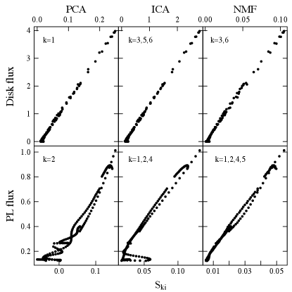
إن السمة الفريدة في NMF، التي لا تسمح إلا بالقيم الموجبة للتفكيك، تتيح توحيد و الناتجين لتكوين أطياف المكونات المنفردة. لذلك نختار الذي يقابل مكوني القرص وقانون القدرة المذكورين أعلاه، ونكون طيفي القرص وقانون القدرة على الصورة و، على الترتيب. ثم تدخل الأطياف الناتجة إلى isis11 1 يتم ذلك عبر دالة isis load_data، التي تستطيع تحميل الملفات الطيفية بصيغة ASCII كما يصفها توثيق isis. وبما أن الأطياف مصححة للتدفق أصلًا، يفترض لأغراض الملاءمة وجود استجابة قطرية فقط بمساحة 1 cm2 وزمن تكامل اسمي قدره 1 sec. وينبغي أن تكون وحدات أطياف ASCII هي photons s-1 cm-2، ومن ثم يضرب و في عروض حاويات الطاقة ويقسمان على طاقة الحاوية. ومن المهم أيضًا ضبط المتغير minimum_stat_err على قيمة أدنى من اللايقينيات المدخلة لمنع isis من تعديلها. وتلائم بنموذج diskbb أو cutoffpl من أجل و، على الترتيب. ثم تقارن معلمات الملاءمات (انظر الشكل 10) بالمعلمات الأصلية في الشكل 1. ومن الواضح أنه لا تتحقق مسارات معلمات متماثلة تمامًا، لكن ذلك مدفوع أساسًا بقيم التدفق المنخفضة التي تزيد انحلال معلمات النموذج.
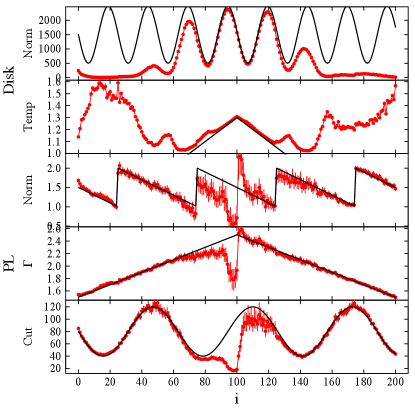
3 تطبيق على GX 339–4
GX 339–4 هو ثنائي أشعة سينية منخفض الكتلة يضم ثقبًا أسود، اكتشف في أوائل سبعينيات القرن 1970 (Markert et al., 1973). وتبلغ كتلة الثقب الأسود 5.8 (Hynes et al., 2003; Muñoz-Darias et al., 2008) عند مسافة قدرها 7–9 kpc (Zdziarski et a., 2004). أما الميل فغير مؤكد، وإن كان على الأرجح أقل من 60∘ (Cowley et al., 2002). ويظهر GX 339–4 فورانات متكررة، وهو أحد أكثر XRBs رصدًا، مما يجعله جرمًا ملائمًا جدًا لكشف التغيرات الزمنية في أطيافه من الأشعة السينية. إضافة إلى ذلك، يمكن عادة ملاءمة أطياف الأشعة السينية لـ GX 339–4 بنموذج بسيط نسبيًا يتألف من مكون جسم أسود قرصي متعدد الألوان ممتص أو مكون قانون قدرة ذي قطع أو كليهما، ومن خط حديد (مثلًا Dunn et al., 2008). وغالبًا ما يستخدم GX 339–4 مثالًا رئيسيًا على مصدر يظهر تباطؤًا في أطياف الأشعة السينية، أي إن الانتقال من الحالة الصلبة التي يهيمن عليها قانون القدرة إلى الحالة اللينة التي يهيمن عليها القرص يحدث عند لمعان أعلى من الانتقال من الحالة اللينة عائدًا إلى الحالة الصلبة في الفوران نفسه (مثلًا Miyamoto et al., 1995; Nowak, 1995; Nowak et al., 2002). كما تربط فورانات GX 339–4 الرصود الراديوية بالتطور الطيفي، بحيث يرتبط تدفق الأشعة السينية بالتدفق الراديوي في الحالة الصلبة (Hannikainen et al., 1998; Corbel et al., 2000, 2013)، ويظهر التدفق الراديوي فورانات قوية عابرة قبل أن يخمد عندما ينتقل المصدر إلى الحالة اللينة، ثم يرصد التدفق الراديوي مرة أخرى عند عودة المصدر إلى الحالة الصلبة ولكن من دون فورانات قوية (Fender et al., 2004). وتجعل هذه الخصائص GX 339–4 مصدرًا جيدًا لسبر فيزياء التراكم وصلة القرص بالنفاثة. وتشمل الرصود الأخرى المثيرة للاهتمام اكتشافات محتملة لقرص التراكم في الحالة الصلبة (Miller et al., 2006; Tomsick et al., 2008; Reis et al., 2010)، وهي ذات آثار على هندسة التراكم وإنتاج النفاثة المدمجة.
لذلك اخترنا GX 339–4 مصدرًا لاختبار أفضل طريقة تفكيك طيفي غير خاضع للإشراف وجدناها في هذا البحث، وهي تحليل NMF (انظر القسم 2)، وذلك بسبب كمية البيانات المتاحة، وسهولة ملاءمة أطياف الأشعة السينية بنماذج بسيطة، والتباطؤ الواضح الذي يظهره المصدر وما له من دلالات في فيزياء التراكم.
3.1 الرصود
حللنا رصود RXTE المؤرشفة لـ GX 339–4 من عام 2002 إلى عام 2010، وتشمل بيانات RXTE/PCA وتجربة توقيت الأشعة السينية عالية الطاقة (RXTE/HEXTE) بمجموع 934 رصدًا موجهًا. واستبعدنا أيضًا الرصود الموجهة التي تظهر فجوات بيانات كبيرة في طيف RXTE/HEXTE. أما فجوات البيانات الصغيرة (3 قنوات طاقة) فتملأ باستيفاء البيانات من النقاط المجاورة. وتشمل مجموعة البيانات الكاملة أربعة فورانات من 2002 و2004 و2007 و2010. ويمكن العثور على نظرة شاملة إلى هذه الفورانات مثلًا في Dunn et al. (2008) وMotta et al. (2011) والمراجع الواردة فيهما. ويخفض كل رصد موجه على حدة بالطريقة المعيارية كما ترد في دليل RXTE باستخدام heasoft 6.13. وتعد الأطياف المنفردة للتحليل على النحو الآتي: يستخرج طيف RXTE/PCA من الطبقة العليا للوحدة PCU–2، التي كانت عاملة في جميع الرصود الموجهة المختارة. ويستخرج طيف RXTE/HEXTE من العنقود B للبيانات السابقة لـ 14 ديسمبر 2009، حين توقف العنقود عن التأرجح وترك بصورة دائمة في وضع توجيه خارج المصدر. وبعد ذلك استخدمنا العنقود A لبيانات المصدر، وقدرنا الخلفية باستخدام العنقود B (بسبب توقف العنقود A عن التأرجح وثباته في وضع توجيه نحو المصدر). ثم تبسط أطياف RXTE/PCA وRXTE/HEXTE وتستخرج قيم التدفق من 3–25 keV لـ RXTE/PCA ومن 20–200 keV لـ RXTE/HEXTE. وبعد ذلك تطبع أطياف RXTE/HEXTE إلى RXTE/PCA بحيث يصبح مجال الطاقة المتداخل من 20–25 keV متماثلًا لكلا الكاشفين. ومع ذلك، تستخدم بيانات RXTE/PCA في هذه المنطقة ضمن الأطياف النهائية.
3.2 النتائج
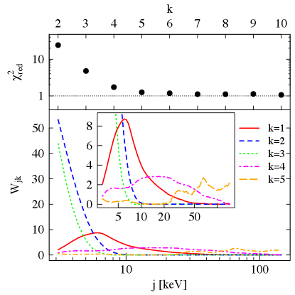
استخدمنا الطريقة نفسها تمامًا كما وصفت في القسم 2.4 لتحليل البيانات الطيفية من GX 339–4. يبين الشكل 11 درجة التفكيك في اللوحة العليا لبيانات GX 339–4. ونختار للدرجة لأنها توفر تقريبًا أفضل بكثير من الدرجات الأصغر، وأسوأ قليلًا فقط من الدرجات الأكبر، كما شرح في القسم 2.4.1. وتعرض اللوحة السفلى من الشكل 11 قيم المنفردة للتفكيك. ومن هذه القيم يمكننا أن نرى أن يقابل القرص، وأن يقابل خط الحديد وقانون القدرة ذي القطع. كما يظهر المكون سمات شبيهة بالخطوط عند الطاقات العالية، تنشأ من خطوط خلفية RXTE/HEXTE الموجودة في أطياف RXTE/HEXTE بعد 2010.
وكما بين في القسم 9، نستطيع تكوين تدفقي القرص وقانون القدرة بجمع قيم المناسبة، وهي هنا و على الترتيب، مع أخذ تدفق خط الحديد في الحسبان ضمن الأخير. وكما ذكر في القسم 9، فإن هذه القيم تقابل تدفقات المكونات الطيفية الفعلية على نحو جيد إلى حد معقول. ولذلك، يمكن تتبع تطور تدفقي القرص وقانون القدرة من دون إجراء أي ملاءمة طيفية للبيانات.
إضافة إلى ذلك، يمكن بناء مخطط كسر القرص-اللمعان (DFLD) ومخطط كسر قانون القدرة-اللمعان (PFLD) باستخدام و. وهنا نستخدم PFLD معرفًا على أنه التدفق الكلي، ، بوصفه دالة في ، الذي يساوي 1 عندما يكون التدفق الكلي مكونًا فقط من تدفق قانون القدرة، ويساوي 0 عندما يكون التدفق الكلي مكونًا فقط من تدفق القرص.
إذا أخذنا النتائج أعلاه على أنها تمثل مكوني القرص وقانون القدرة الفعليين، فيمكننا تكوين طيفي القرص وقانون القدرة على الصورة و، على الترتيب، وإدخالهما إلى isis للملاءمة الطيفية. ونستخدم أخطاء البيانات الأصلية في ملاءمة طيفي و، ولا نضيف أي خطأ نظامي إلى الأطياف. ولائمت أطياف بنموذج phabsdiskbb باستخدام مجال طاقة 3–15 keV، و بنموذج phabscutoffpl باستخدام مجال طاقة 10–140 keV، وبذلك تركت منطقة خط الحديد جانبًا للتبسيط وللتركيز بصورة أفضل على استمرارية قانون القدرة. يبين الشكل 12 نتائج النمذجة مرسومة على PFLD. وقد فعل ذلك لإظهار تطور المعلمات لا لتقديم قيم حاسمة. وبما أنه ليس واضحًا كيف ستقسم أخطاء البيانات بين مكوني و، فإن المعلمات الناتجة لها أخطاء أكبر مما لو لائمت بالأطياف الكاملة. ولذلك تكون قيم المعلمات في هذا العرض أكثر متانة عندما تتغير تدريجيًا، ولا تمثل على الأرجح القيمة الفعلية عندما تكون في منطقة تتغير فيها قيمة المعلمة فجأة عبر مجال المعلمة كله (أي مزيج من الألوان في الشكل 12). إضافة إلى ذلك، تزال قيم المعلمات التي تكون قيم أخطائها مساوية للقيمة الدنيا أو القصوى المسموح بها.
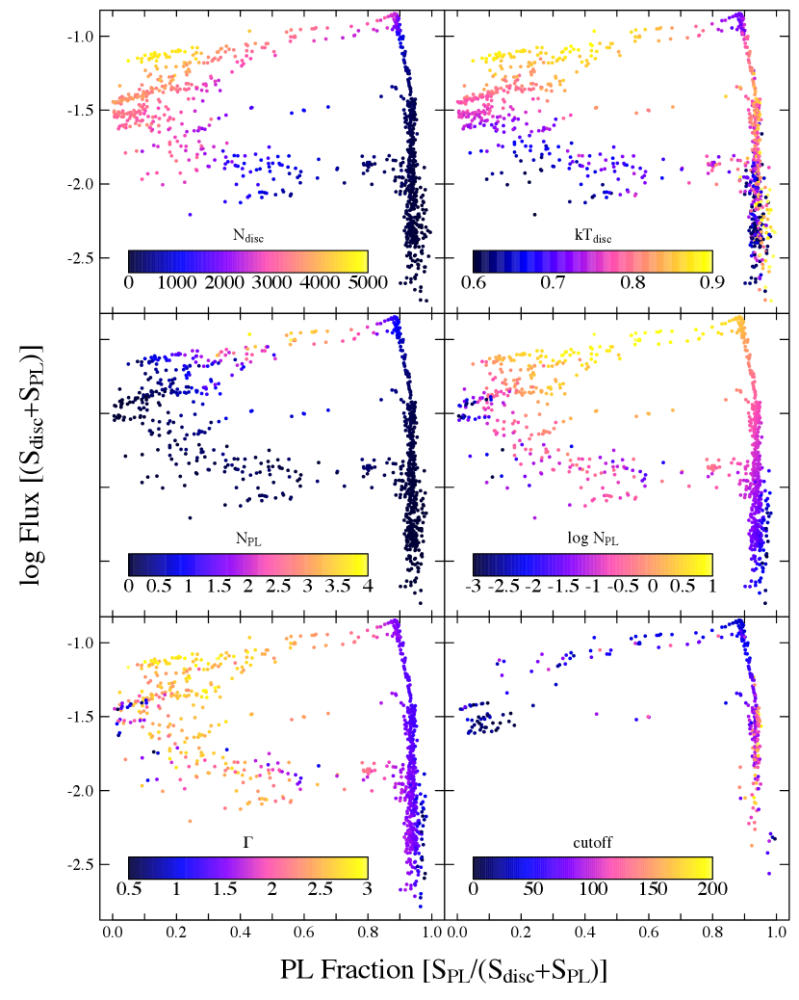
من الشكل 12 يمكننا أن نرى ما يلي:
-
1.
تزداد معايرة قانون القدرة مع اللمعان الكلي، ويزداد معامل قانون القدرة مع كسر قانون القدرة، باستثناء الحالة التي يكون فيها كسر قانون القدرة دون 0.01. ويبدو أن التشتت في الجزء السفلي من الحالة الصلبة يرجع إلى تغير قيمة معامل قانون القدرة من 1–1.5.
-
2.
عندما يبدأ كسر قانون القدرة في الانخفاض في الحالة الصلبة، تبدأ معايرة القرص في الازدياد.
-
3.
تنخفض طاقة القطع مع اللمعان في الحالة الصلبة. وحتى اللمعان الحرج (كما نوقش أعلاه) يكون القطع أعلى من 100 keV، لكنه يبدأ بالانخفاض بعد اللمعان الحرج إلى 30–40 keV.
-
4.
يبدو أن الفرق بين تدفقي الانتقال عند الانتقال إلى الحالة اللينة ينشأ من اختلاف في معايرة القرص ومعايرة قانون القدرة (ويمكن كذلك رؤية مؤشر إلى اختلاف في طاقة القطع)، في حين تتغير درجة حرارة القرص ومعامل قانون القدرة على نحو مماثل في كل انتقال.
-
5.
يسخن القرص عند الانتقال إلى الحالة اللينة، وهناك مؤشر إلى سخونة أخرى أيضًا عند الانتقال عائدًا إلى الحالة الصلبة.
-
6.
في الحالة اللينة تنخفض كل من معايرة القرص ودرجة حرارته ببطء.
تتوافق هذه النتائج جيدًا مع النتائج التي وجدت في دراسات سابقة (مثلًا في Dunn et al., 2008; Del Santo et al., 2008; Motta et al., 2011; Stiele et al., 2011; Cadolle Bel et al., 2011). إضافة إلى ذلك، يستطيع تحليل NMF تتبع تغيرات مكون القرص في نظام كسر القرص المنخفض. وتقابل هذه المناطق الحالات التي يكون فيها مكون القرص ضعيفًا وغير مطلوب إحصائيًا في الملاءمات الطيفية التي أجريت سابقًا. غير أن من الممكن أن يكون الذيل منخفض الطاقة لمصفوفات الاستجابة، الناشئ من قمم الهروب والفلورة، يحاكي مكون القرص في الحالات الطيفية الخافتة. لكن هذه القمم ناجمة على الأرجح عن فوتونات تأتي من المكون الطيفي الصلب، ومن ثم تمتلك التغير نفسه منتجة فائضًا لينًا للمكون الصلب المفكك، لا للمكون اللين. ويبين هذا قوة تحليل NMF في الحالات التي يصعب فيها كشف مكون القرص باستخدام الملاءمة الطيفية وحدها. وبينما يمكن تمييز تدفقات مكوني القرص وقانون القدرة على نحو جيد إلى حد معقول في تحليل NMF (الشكل 9)، ينبغي توخي الحذر في قيم المكونات الطيفية في أنظمة التدفق المنخفض، إذ إنها على الأرجح منحلة (انظر الشكل 10 وقارنه بالشكل 1).
كما وجد في دراسات سابقة، فإن لمعان القرص في الحالة اللينة تحكمه علاقة التي تحاكي الانبعاث من جسم أسود بنصف قطر ودرجة حرارة . ويفترض عادة أن العلاقة أعلاه تتحقق عندما يكون القرص الداخلي واقعًا عند المدار الدائري المستقر الأعمق (ISCO)، رغم أن عوامل متعددة يمكن أن تؤثر في هذا التحجيم (انظر مناقشة أكمل للاختلاف بين هذه العوامل في Salvesen et al. 2013). يبين الشكل 13 مخطط اللمعان-درجة الحرارة لمجموعة من النقاط المختارة مع خط أفضل ملاءمة بالأسود، ويعرض الإطار الداخلي PFLD كاملًا مع النقاط المختارة بالأحمر. ويتبع خط أفضل ملاءمة تقريبًا العلاقة ، التي تختلف عن العلاقة المعتادة. غير أن RXTE حساس فقط للطاقات 3 keV فما فوق، ولذلك فإن تدفق الأشعة السينية الأكثر لينًا المفقود، فضلًا عن الامتصاص، يؤثران في مخطط اللمعان-درجة الحرارة كما نوقش في Dunn et al. (2008) (حيث كان ارتباطهم الأصلي والمصحح ). ونحن هنا معنيون بتحجيم القرص-درجة الحرارة بالمعنى الواسع، ونفترض أنه عند أخذ البيانات دون 3 keV وأثر الامتصاص في الحسبان على نحو سليم، ينبغي أن يكون التحجيم قريبًا من . ومن الشكل 13 يمكن أن نرى أن GX 339–4 يظهر علاقة القرص-درجة الحرارة في مكون القرص مباشرة بعد أن يبدأ الانتقال إلى الحالة اللينة، أي إن القرص الداخلي يبدو أنه عند ISCO بالفعل في بداية الحالة المتوسطة مباشرة بعد ذروة الفوران. وتنكسر هذه العلاقة في الحالة اللينة عندما يحقق كسر قانون القدرة قيمًا قريبة من 0.3–0.4.
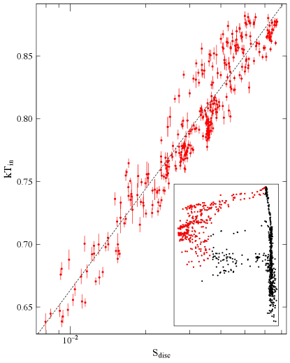
4 الاستنتاجات
بيننا في هذا البحث أن طرائق التفكيك الطيفي الخطية غير الخاضعة للإشراف يمكن أن تستخدم لتتبع تطور مكونات طيفية متميزة. ويمكن أخذ اللاخطيات الموجودة في المكونات الطيفية الأصلية في الحسبان بجمع مكونات خطية متعددة استنادًا إلى أوزانها عبر الطاقات الطيفية. وتستطيع هذه الطرائق فصل مكونات طيفية تتغير بطرق مختلفة، بشرط أن تظهر أثرًا قابلًا للقياس في التدفقات. ومن بين الطرائق الثلاث المستخدمة لمعالجة مجموعة بيانات محاكاة، بينا أن تفكيك المصفوفات غير السالب يؤدي أفضل من تحليل المكونات الرئيسية وتحليل المكونات المستقلة. كما يتميز تفكيك المصفوفات غير السالب بفائدة إضافية، هي أن التفكيكات الناتجة تكون موجبة دائمًا، ومن ثم يمكن استخدام مكونات هذه التفكيكات لملاءمة النماذج الطيفية كل على حدة. وتتبع تغيرات المعلمات الطيفية المنفردة ليس متينًا بقدر تتبع التدفقات، لكنه يمكن أن يتم على نحو معقول مع أطياف جيدة الجودة وقيم تدفق عالية. وهذا يمتلك ميزة على الملاءمة الطيفية العادية، حيث تلائم نماذج مختلفة الأطياف نفسها، أو حيث لا يكون مكون طيفي بعينه مطلوبًا إحصائيًا في الملاءمات.
طبقنا تفكيك المصفوفات غير السالب على مجموعة من أطياف RXTE لثنائي الأشعة السينية المجري ذي الثقب الأسود GX 339–4، التي تشمل أربعة فورانات من المصدر. ووجدنا أن خمسة مكونات مطلوبة لتمثيل الأطياف بدقة، وأن هذه المكونات يمكن تقسيمها إلى مكونات قرص وقانون قدرة مع أخذ خط الحديد في الحسبان ضمن الأخير. وتؤيد ملاءمة مكوني القرص وقانون القدرة المفككين كل على حدة بنموذج طيفي مناسب الرأي القائل إن الحافة الداخلية للقرص تقع عند المدار الدائري المستقر الأعمق في بداية الحالة المتوسطة التي تعقب ذروة الفوران. غير أن هذا التحليل ينبغي أن يصقل بإدراج بيانات دون حد RXTE للأشعة السينية اللينة.
نتصور مستقبلًا أن طرائق التفكيك الطيفي الخطية غير الخاضعة للإشراف ستستخدم في أوضاع متعددة تتضمن كشف مكونات طيفية منفصلة. ولكي نوسع هذه الدراسات الأولية في كشف قرص التراكم في حالات تدفق القرص المنخفض، كما يرى مثلًا في الحالة الصلبة، فسنحتاج إلى الوصول إلى بيانات من مصادر متعددة وإلى كواشف أكثر حساسية لنطاقات الأشعة السينية الأكثر لينًا. ومن أجل كشف المكون الطيفي المسؤول عن التذبذبات شبه الدورية في XRBs، يمكن اختبار مقاييس توقيت مختلفة. وأخيرًا، توفر هذه الطرائق سبيلًا بديلًا لكشف المكونات الطيفية من دون إجراء ملاءمة طيفية فعلية، وهو ما قد يثبت أنه أداة لا تقدر بثمن عند التعامل مع مجموعات بيانات كبيرة.
الشكر والتقدير
أشكر المحكم على القراءة المتأنية للمخطوطة وعلى الاقتراحات الممتازة التي حسنت البحث. وأشكر Diana Hannikainen وThomas Maccarone على النقاشات المفيدة. وأعرب بامتنان عن تقديري للدعم المقدم من Emil Aaltonen säätiö. وقد استفاد هذا البحث من بيانات حصل عليها من مركز أبحاث أرشيف علوم الفيزياء الفلكية عالية الطاقة (HEASARC)، الذي يوفره مركز غودارد لرحلات الفضاء التابع لـ NASA.
References
- Allen et al. (2013) Allen J.T., Hewett P.C., Richardson C.T., Ferland G.J., Baldwin J.A., 2013, MNRAS, 430, 3510
- Brunet et al. (2004) Brunet J.-P., Tamayo P., Golub T.R., Mesirov J.P., 2004, PNAS, 101, 4164
- Cadolle Bel et al. (2011) Cadolle Bel, M. et al., 2011, A&A, 534, A119
- Connolly et al. (1995) Connolly A. J. et al., 1995, AJ, 110, 2655
- Corbel et al. (2000) Corbel S., Fender R.P., Tzioumis A.K., Nowak M., McIntyre V., Durouchoux P., Sood, R., 2000, A&A, 359, 251
- Corbel et al. (2013) Corbel S., Coriat M., Brocksopp C., Tzioumis A.K., Fender R.P., Tomsick J.A., Buxton M.M., Bailyn C.D., 2013, MNRAS, 428, 2500
- Cowley et al. (2002) Cowley A.P., Schmidtke P.C., Hutchings J.B., Crampton D., 2002, AJ, 123, 1741
- Del Santo et al. (2008) Del Santo M., Malzac J., Jourdain E., Belloni T.M., Ubertini P., 2008, MNRAS, 390, 227
- Dunn et al. (2008) Dunn R.J.H., Fender R.P., Körding E.G., Cabanac C., Belloni T., 2008, MNRAS, 387, 545
- Falcke & Biermann (1999) Falcke H., Biermann P. L., 1999, A&A, 342, 49
- Fender et al. (2004) Fender R.P., Belloni T.M., Gallo E., 2004, MNRAS, 355, 1105
- Francis et al. (1992) Francis P.J., Hewett P.C., Foltz C.B., Chaffee F.H., 1992, ApJ, 398, 476
- Garcia et al. (2001) Garcia M.R., McClintock J.E., Narayan R., Callanan P., Barret D., Murray S.S., 2001, ApJ, 553, L47
- Gaujoux & Seoighe (2010) Gaujoux R., Seoighe C., 2010, BMC Bioinformatics, 11, 367
- Hannikainen et al. (1998) Hannikainen D.C., Hunstead R.W., Campbell-Wilson D., Sood R.K., 1998, A&A, 337, 460
- Houck & Denicola (2000) Houck J.C., Denicola L.A., 2000, in Manset N., Veillet C., Crabtree D., eds., ASP Conf. Ser. 216, Astronomical Data Analysis Software and Systems IX, p. 591
- Hutchins et al. (2008) Hutchins L.N., Murphy S.M., Singh P., Graber J.H., 2008, Bioinformatics, 24(23), 2684
- Hynes et al. (2003) Hynes R.I., Steeghs D., Casares J., Charles P.A., O’Brien K., 2003, ApJ, 583, L95
- Hyvärinen (1999) Hyvärinen A., 1999, IEEE Transactions on Neural Networks 10(3), 626
- Hyvärinen et al. (2001) Hyvärinen A., Karhunen J., Oja E., 2001, Independent Component Analysis, 2nd ed., John Wiley & Sons
- Ichimaru (1977) Ichimaru S., 1977, ApJ, 214, 840
- Jolliffe (2002) Jolliffe I.T., 2002, Principal Component Analysis, 2nd ed., Springer-Verlag, New York
- Koljonen et al. (2013) Koljonen K.I.I., McCollough M.L., Hannikainen D.C., Droulans R., 2013, MNRAS, 429, 1173
- Lee & Seung (1999) Lee D.D., Seung H.S., 1999, Nat, 401, 788
- Lee & Seung (2001) Lee D.D., Seung H.S., 2001, in Leen T.K., Dietterich T.G., Tresp V., eds., Advances in neural information processing systems 13: Algorithms for Non-negative Matrix Factorization. MIT Press, Cambridge, MA, p. 556
- Lu et al. (2006) Lu H., Zhou H., Wang J., Wang T., Dong X., Zhuang Z., Li C., 2006, AJ, 131, 790
- Malzac et al. (2006) Malzac J. et al., 2006, A&A, 448, 1125
- Markert et al. (1973) Markert T.H., Canizares C.R., Clark G.W., Lewin W.H.G., Schnopper H.W., Sprott G.F., 1973, ApJ, 184, L67
- Markoff et al. (2001) Markoff S., Falcke H., Fender R., 2001, A&A, 372, L25
- Markoff et al. (2005) Markoff S., Nowak M.A., Wilms J., 2005, ApJ, 635, 1203
- McClintock et al. (2003) McClintock J.E., Narayan R., Garcia M.R., Orosz J.A., Remillard R.A., Murray S.S., 2003, ApJ, 593, 435
- Miller et al. (2006) Miller J.M., Homan J., Steeghs D., Rupen M., Hunstead R.W., Wijnands R., Charles P.A., Fabian A.C., 2006, ApJ, 653, 525
- Miyamoto et al. (1995) Miyamoto S., Kitamoto S., Hayashida K., Egoshi W., 1995, ApJ, 442, L13
- Motta et al. (2011) Motta S., Muñoz-Darias T., Casella P., Belloni T., Homan J., 2011, MNRAS, 418, 2292
- Muñoz-Darias et al. (2008) Muñoz-Darias T., Casares J., Martínez-Pais I.G., 2008, MNRAS, 385, 2205
- Narayan & Yi (1994) Narayan R., Yi I., 1994, ApJ, 428, L13
- Narayan et al. (1997) Narayan R., Garcia M.R., McClintock J.E., 1997, ApJ, 478, L79
- Nowak (1995) Nowak M.A., 1995, PASP, 107, 1207
- Nowak et al. (2002) Nowak M.A., Wilms J., Dove J.B., 2002, MNRAS, 332, 856
- Nowak et al. (2011) Nowak M.A. et al., 2011, ApJ, 728, 13
- Paatero & Tapper (1994) Paatero P., Tapper U., 1994, Environmetrics, 5(2), 111
- Parker et al. (2014) Parker M.L., Marinucci A., Brenneman L., Fabian A.C., Kara E., Matt G., Walton D.J., 2014, MNRAS, 437, 721
- Reis et al. (2010) Reis R.C., Fabian A.C., Miller J.M., 2010, MNRAS, 402, 836
- Russell et al. (2010) Russell D.M., Maitra D., Dunn R.J.H., Markoff S., 2010, MNRAS, 405, 1759
- Sajda et al. (2003) Sajda P., Shuyan D., Parra L.C, 2003, in Unser M.A, Aldroubi A., Laine A.F., eds, Proc. SPIE 5207, Wavelets: Applications in Signal and Image Processing X, San Diego, p. 321
- Salvesen et al. (2013) Salvesen G., Miller J.M., Reis R.C., Begelman M.C., MNRAS, 431, 3510
- Stiele et al. (2011) Stiele H., Motta S., Muñoz-Darias T., Belloni T.M., 2011, MNRAS, 418, 1746
- Tomsick et al. (2008) Tomsick J.A. et al., 2008, ApJ, 680, 593
- Vaughan & Fabian (2004) Vaughan S., Fabian A.C., 2004, MNRAS, 348, 1415
- Whitney (1983) Whitney C.A., 1983, A&AS, 51, 443
- Zdziarski et a. (2004) Zdziarski A.A., Gierliński M., Mikołajewska J., Wardziński G., Smith D.M., Harmon B.A., MNRAS, 351, 791